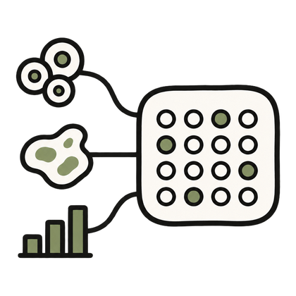
One API, AnnData throughout
The same ov.pp / ov.tl / ov.pl calls for every modality. scanpy pipelines plug in unchanged.
OmicVerse · open-source community
An open community rebuilding trusted omics methods in Python and Rust, verifying them against the originals, and making them runnable by agents.
$pip install omicverse
Why OmicVerse

The same ov.pp / ov.tl / ov.pl calls for every modality. scanpy pipelines plug in unchanged.
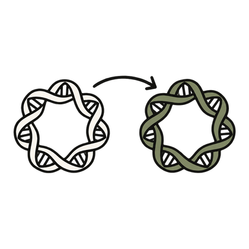
Pure-Python and Rust ports of CRAN and Bioconductor packages. No rpy2, no R install.
Every port pre-registers a parity gate and runs it against the R reference before release.
Skills, tutorials and report templates let analysis agents run the stack end to end.
Ecosystem coverage
import omicverse as ov — then pick a layer.
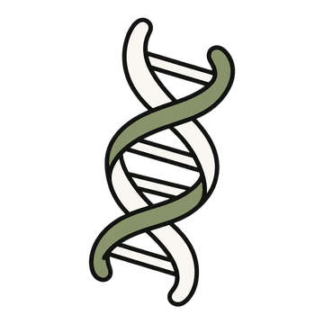
Assay FASTA, counts, VCF and alignments in. ov.align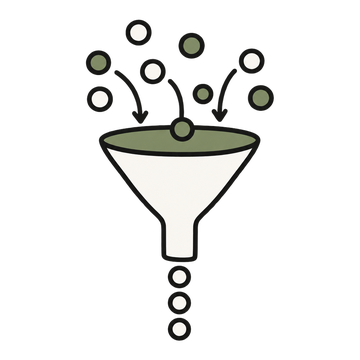
Preprocess QC, normalization, PCA, batch correction. ov.pp Single-cell Annotation, velocity, trajectories, NMF. ov.single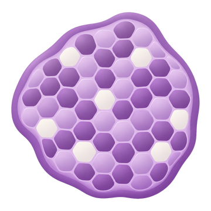
Spatial Clustering, deconvolution, segmentation. ov.space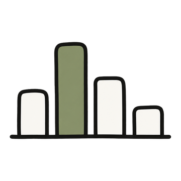
Bulk Differential analysis, deconvolution, pathways. ov.bulk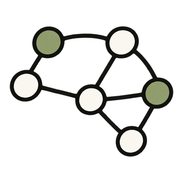
Foundation Cell embeddings and perturbation models. ov.fm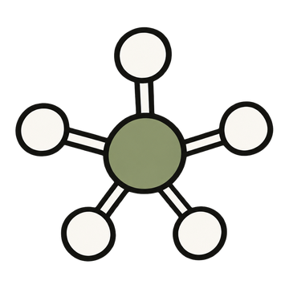
Molecular Structures, docking, structure-aware analysis. ov.mol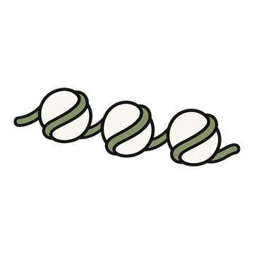
Epigenomics ATAC, ChIP, Hi-C, CUT&Tag. ov.epi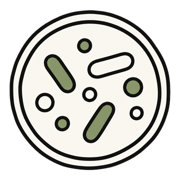
Microbiome 16S workflows, diversity, abundance. ov.micro Metabolomics ID mapping, MSEA, biomarkers. ov.metabolR ports
Every port maps the upstream R functions to their Python or Rust counterparts and is checked against the R reference on a fixed fixture. Click a sticker to see its map.
Quickstart
Read, QC, normalize, embed and cluster with the same calls for every data type. The object stays AnnData the whole way, so scanpy, exports or an agent can take over at any step.
$ pip install omicverse import omicverse as ov adata = ov.datasets.pbmc8k() ov.pp.qc(adata, tresh={"mito_perc": 0.2, "nUMIs": 500}) ov.pp.preprocess(adata, mode="shiftlog|pearson", n_HVGs=2000) ov.pp.scale(adata); ov.pp.pca(adata, layer="scaled") ov.pp.neighbors(adata, use_rep="scaled|original|X_pca") ov.pp.umap(adata); ov.pp.leiden(adata) # adata.obs["leiden"] · adata.obsm["X_umap"]
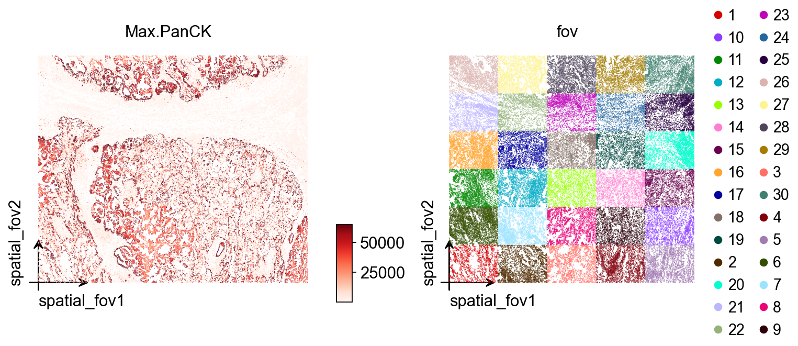
Spatial Analyzing NanoString CosMx data FOV-aware loading, segmentation checks and inputs for downstream spatial models.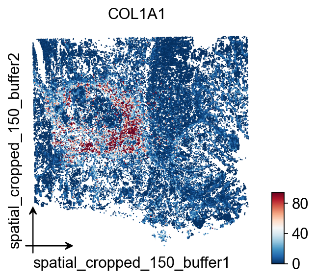
Segmentation Cell segmentation for Visium HD with Cellpose From 2 µm bins and H&E to cells, in pure Python.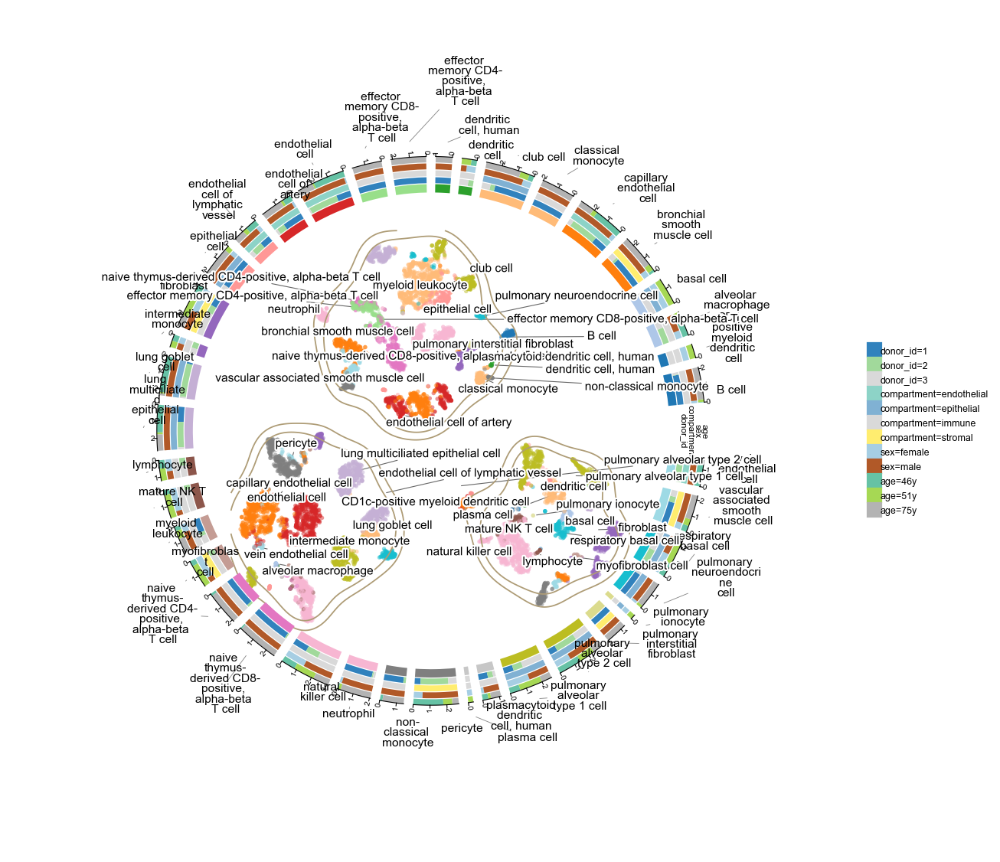
Visualization Circular UMAPs with plot1cell Cells in a ring, metadata around it, one call.Contribute
Nominate an R package, follow the porting protocol, ship a verified wheel. The repository stays yours.